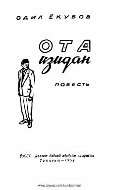

OIYosh olim Shukurjonning hayoti va insoniy munosabatlar haqida qissa.
Bu qissa Odil Yoqubovning 1959-yilda nashr etilgan asari bo'lib, Shukurjon ismli yosh olim hayoti va uning atrofidagi insonlar bilan munosabatlarini tasvirlaydi. Asarda ilmiy muhit, shaxsiy muammolar va insoniy munosabatlar badiiy tarzda yoritilgan. Qissa o'zbek sovet adabiyotining yorqin namunalaridan biri hisoblanadi.